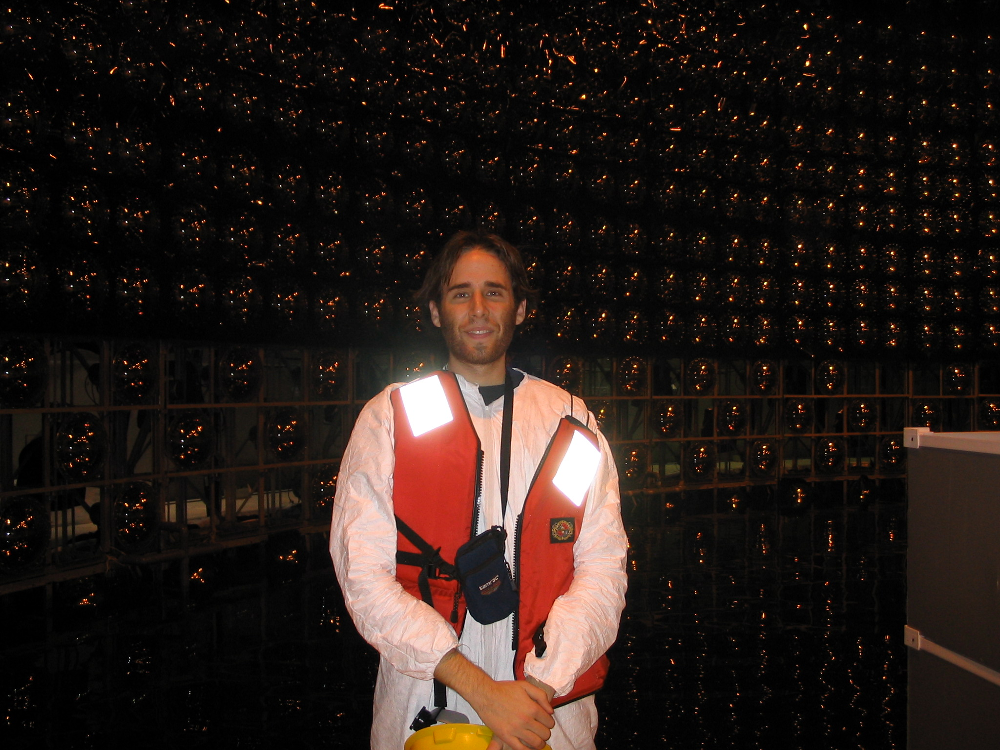
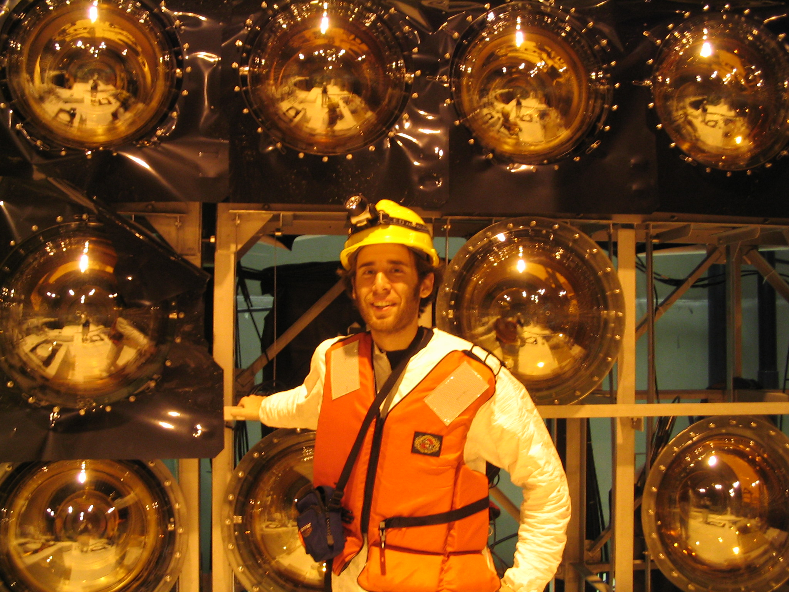
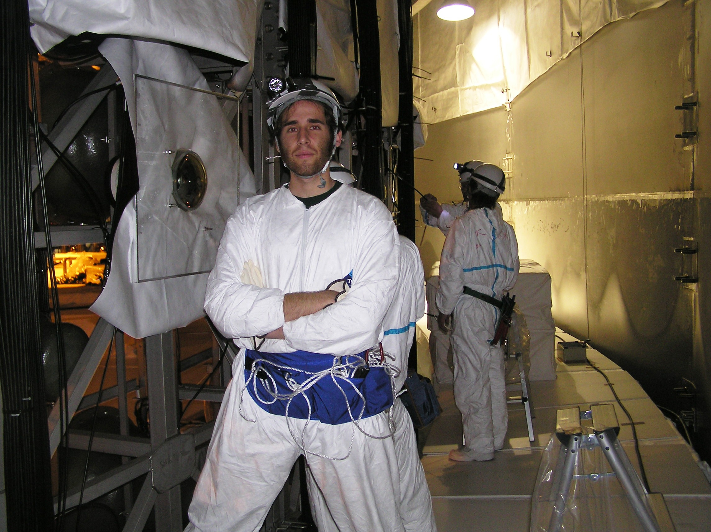
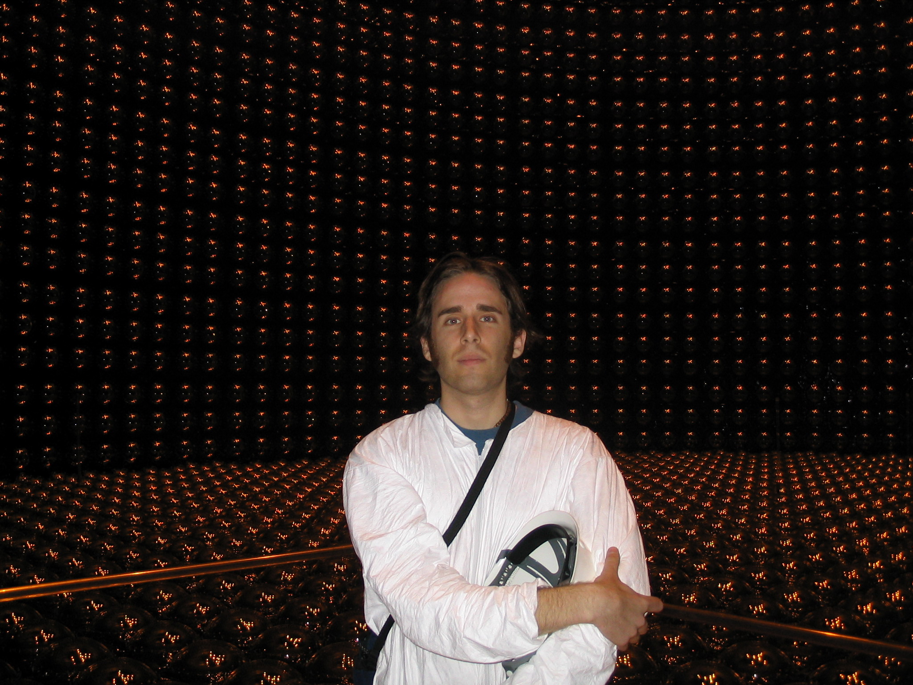
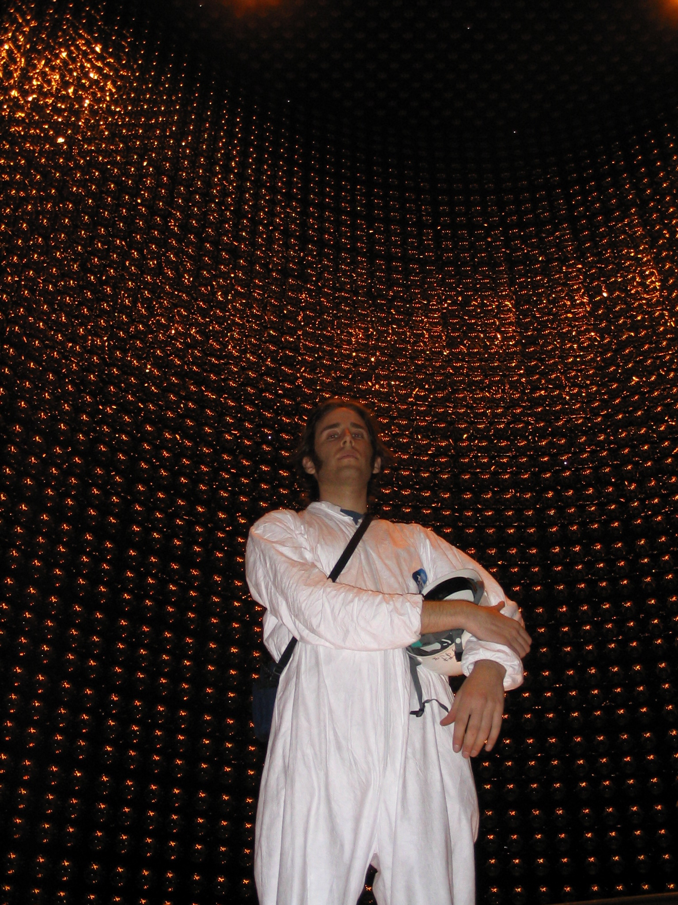

Photos from Super-K
Super-Kamiokande is a neutrino detector located in Japan near the city of Toyama, which is west-northwest of Tokyo.
It is cylindrical in shape and contains 50,000 tons of ultrapurified water.
In order to shield it from cosmic radiation, the detector, which is roughly the height of a thirteen story building, is located under 1 km of rock in Mt. Ikeno.
Relativistic particles, produced from neutrino interactions in and around the detector, produce Cherenkov radiation as they travel through the detector, and this light is detected by the detector's ~11,000 40 cm photomultiplier tubes (PMTs).

In this photo I'm standing on a floating platform near the bottom of the inner detector during the 2005 SK-III rebuild.

Here, I am posing with some of the ~11,000 inner detector PMTs.

This picture was taken on a floating platform in the outer detector.
The outer detector PMTs are significantly smaller than their inner detector counterparts.
All our tools had to be tied to our belt to reduce the chance of dropping something into the water.

This picture was taken from the bottom of the inner detector after all the water had been drained out.

Here's one more taken from the bottom of the ID, but looking up.
The ID is 40 meters tall.
Home